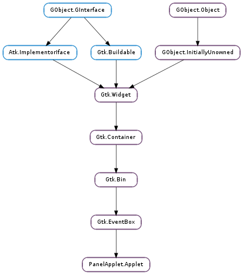

| static | factory_main(factory_id, applet_type, callback, *data) |
| add_preferences(schema_dir) | |
| gconf_get_bool(key) | |
| gconf_get_float(key) | |
| gconf_get_full_key(key) | |
| gconf_get_int(key) | |
| gconf_get_string(key) | |
| gconf_get_value(key) | |
| gconf_set_bool(key, the_bool) | |
| gconf_set_float(key, the_float) | |
| gconf_set_int(key, the_int) | |
| gconf_set_string(key, the_string) | |
| gconf_set_value(key, value) | |
| get_background() | |
| get_flags() | |
| get_locked_down() | |
| get_orient() | |
| get_preferences_key() | |
| get_size() | |
| request_focus(timestamp) | |
| set_background_widget(widget) | |
| set_flags(flags) | |
| set_size_hints(size_hints, n_elements, base_size) | |
| setup_menu(xml, action_group) | |
| setup_menu_from_file(filename, action_group) | |
| setup_menu_from_resource(resource_path, action_group) |
| Name | Type | Flags | Description |
|---|---|---|---|
| flags | int | r/w | Panel Applet flags |
| locked-down | bool | r/w | Whether the panel the applet is on is locked down |
| orient | int | r/w | Panel Applet Orientation |
| prefs-key | str | r/w | GConf Preferences Key |
| settings-path | str | r/w | Gio.Settings path to per-instance settings |
| size | int | r/w | Panel Applet Size |
| size-hints | int | r/w | Size hints of the applet |
| Name | Parameters | Return | Description |
|---|---|---|---|
| change-background | cairo.Pattern | Emitted when the background of applet has changed. | |
| change-orient | int | Emitted when the PanelApplet.AppletOrient of applet has changed. | |
| change-size | int | Emitted when the size of the panel applet is on has changed. | |
| move-focus-out-of-applet | Gtk.DirectionType | Emitted when the focus is moved out of applet. This is an implementation detail. |
| Name | Type | Access |
|---|---|---|
| event_box | Gtk.EventBox | r |
Bases: Gtk.EventBox
| Parameters: |
|
|---|---|
| Returns: | 0 on success, 1 if there is an error. |
| Return type: |
Creates the applet factory for factory_id, so that the factory can create instances of the applet types it is associated with.
Applet instances created by the applet factory will use applet_type as GObject.Type. Unless you subclass PanelApplet.Applet, you should use %PANEL_TYPE_APPLET as applet_type.
On creation of the applet instances, callback is called to setup the applet. If callback returns False, the creation of the applet instance is cancelled.
If using C, it is recommended to use #PANEL_APPLET_OUT_PROCESS_FACTORY instead as it will create a main() function for you.
It can only be used once, and is incompatible with the use of %PANEL_APPLET_IN_PROCESS_FACTORY and %PANEL_APPLET_OUT_PROCESS_FACTORY.
| Parameters: | schema_dir (str) – a GConf path of a schema directory. |
|---|---|
| Raises: | GLib.GError |
Associates the per-instance GConf directory of applet to the schemas defined in schema_dir. This must be called if the applet will save per-instance settings, to ensure that each key in the per-instance GConf directory has a defined type, sane default and documentation.
| Parameters: | key (str) – a GConf key name. |
|---|---|
| Raises: | GLib.GError |
| Returns: | the value of key. |
| Return type: | bool |
Convenience wrapper around GConf.Client.get_bool () to get the value of key in the per-instance GConf directory of applet.
| Parameters: | key (str) – a GConf key name. |
|---|---|
| Raises: | GLib.GError |
| Returns: | the value of key. |
| Return type: | float |
Convenience wrapper around GConf.Client.get_float () to get the value of key in the per-instance GConf directory of applet.
| Parameters: | key (str) – a GConf key name. |
|---|---|
| Return type: | str |
Returns the full GConf path of key, in the per-instance GConf directory of applet. The string should be freed by the caller.
| Parameters: | key (str) – a GConf key name. |
|---|---|
| Raises: | GLib.GError |
| Returns: | the value of key. |
| Return type: | int |
Convenience wrapper around GConf.Client.get_int () to get the value of key in the per-instance GConf directory of applet.
| Parameters: | key (str) – a GConf key name. |
|---|---|
| Raises: | GLib.GError |
| Returns: | the value of key. The string should be freed by the caller. |
| Return type: | str |
Convenience wrapper around GConf.Client.get_string () to get the value of key in the per-instance GConf directory of applet.
| Parameters: | key (str) – a GConf key name. |
|---|---|
| Raises: | GLib.GError |
| Returns: | the value of key. |
| Return type: | GConf.Value |
Convenience wrapper around gconf_client_get_value() to get the value of key in the per-instance GConf directory of applet.
| Parameters: | |
|---|---|
| Raises: |
Convenience wrapper around GConf.Client.set_bool () to update key in the per-instance GConf directory of applet.
| Parameters: |
|
|---|---|
| Raises: |
Convenience wrapper around GConf.Client.set_float () to update key in the per-instance GConf directory of applet.
| Parameters: | |
|---|---|
| Raises: |
Convenience wrapper around GConf.Client.set_int () to update key in the per-instance GConf directory of applet.
| Parameters: | |
|---|---|
| Raises: |
Convenience wrapper around GConf.Client.set_string () to update key in the per-instance GConf directory of applet.
| Parameters: |
|
|---|---|
| Raises: |
Convenience wrapper around gconf_client_set_value() to update key in the per-instance GConf directory of applet.
| Returns: | a new cairo.Pattern to use as background for applet. |
|---|---|
| Return type: | cairo.Pattern |
Gets the background pattern for applet, or None if there is none.
| Returns: | the PanelApplet.AppletFlags of applet. |
|---|---|
| Return type: | PanelApplet.AppletFlags |
Gets the PanelApplet.AppletFlags of applet.
| Returns: | True if the panel applet is on is locked down, False otherwise. |
|---|---|
| Return type: | bool |
Gets whether the panel applet is on is locked down or not. A locked down applet should not allow any change to its configuration.
| Returns: | the PanelApplet.AppletOrient of applet. |
|---|---|
| Return type: | PanelApplet.AppletOrient |
Gets the PanelApplet.AppletOrient of applet.
| Returns: | a copy of the GConf path to the per-instance settings of applet. |
|---|---|
| Return type: | str |
Gets the GConf path to the per-instance settings of applet.
| Returns: | the size of the panel applet is on. |
|---|---|
| Return type: | int |
Gets the size of the panel applet is on. For a horizontal panel, the size if the height of the panel; for a vertical panel, the size is the width of the panel.
| Parameters: | timestamp (int) – the timestamp of the user interaction (typically a button or key press event) which triggered this call. |
|---|
Requests focus for applet. There is no guarantee that applet will successfully get focus after that call.
| Parameters: | widget (Gtk.Widget) – a Gtk.Widget. |
|---|
Configure PanelApplet.Applet to automatically draw the background of the applet on widget. It is generally enough to call this function with applet as widget.
| Parameters: | flags (PanelApplet.AppletFlags) – PanelApplet.AppletFlags to use for applet. |
|---|
Sets the PanelApplet.AppletFlags of applet. Most of the time, at least PanelApplet.AppletFlags.EXPAND_MINOR should be used.
| Parameters: |
|---|
Give hints to the panel about sizes applet is comfortable with. This is generally useful for applets that can take a lot of space, in case the panel gets full and needs to restrict the size of some applets.
size_hints should have an even number of sizes. It is an array of (max, min) pairs where min(i) > max(i + 1).
base_size will be added to all sizes in size_hints, and is therefore a way to guarantee a minimum size to applet.
The panel will try to allocate a size that is acceptable to applet, i.e. in one of the (base_size + max, base_size + min) ranges.
PanelApplet.AppletFlags.EXPAND_MAJOR must be set for applet to use size hints.
| Parameters: |
|
|---|
Sets up the context menu of applet. xml is a Gtk.UIManager UI definition, describing how to display the menu items. action_group contains the various Gtk.Action that are referenced in xml.
See also the Context Menu section.
| Parameters: |
|
|---|
Sets up the context menu of applet. filename is the path to a menu XML file, containing a Gtk.UIManager UI definition that describes how to display the menu items. action_group contains the various Gtk.Action that are referenced in xml.
See also the Context Menu section.
| Parameters: |
|
|---|
Sets up the context menu of applet. filename is a resource path to a menu XML file, containing a Gtk.UIManager UI definition that describes how to display the menu items. action_group contains the various Gtk.Action that are referenced in xml.
See also the Context Menu section.